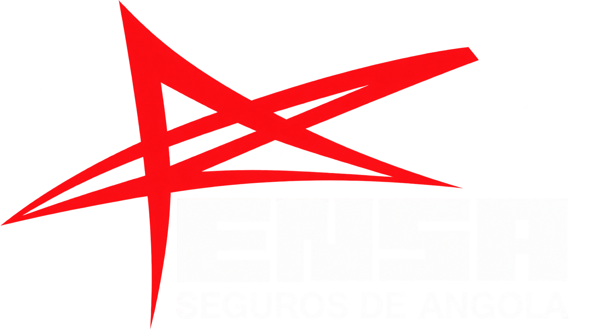

Caso em destaque // ENSA Seguros
Gestão de Assembleias Gerais
Plataforma em produção para a ENSA Seguros de Angola: do check-in do accionista ao resultado da votação, com quórum e pesos por acções em tempo real.

O problema
Uma assembleia geral de accionistas junta credenciação, quórum, votação ponderada e documentação. Feito no papel ou em folhas soltas, o processo é lento, difícil de auditar e pouco transparente no momento da deliberação.
A solução
- Acesso restrito a utilizadores autorizados, com sessão autenticada.
- Check-in de presenças por leitura de QR no cartão do accionista, com câmara no posto de entrada.
- Painel de quórum: capital representado versus mínimo exigido (ex.: 51%), presenças e acções em sala.
- Votação presencial com resultado a favor / contra / abstenção, ponderado por número de acções, e estado Aprovado quando o limiar é atingido.
- Módulos de accionistas, assembleias, QR codes, utilizadores e configurações para a operação completa do dia.
Impacto
A assembleia deixa de depender de folhas manuais: a presença é registada na hora, o quórum é visível e o resultado da deliberação fica documentado com o peso real de cada voto.


